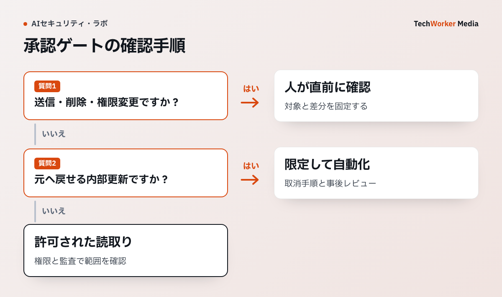

AIに毎回確認を求められると作業は進まず、すべて自動で進むと誤送信や削除を止められません。承認の設計では、操作が外部へ与える影響と、元に戻せるかどうかを分けて考えます。Chromeの公式資料にも、ツールが書き込みを行う可能性を前提とした注意があります。
一次資料：Chromeが示す、ツール操作時の注意（2026年6月9日、確認：2026年10月6日）
Assume WebMCP tools mutate state, unless the tool description or annotations (readOnlyHint) clearly state otherwise.
出典：Chrome for Developers, Agent security considerations for WebMCP。この引用は、読取り専用と明示されていないツールには、データや状態を変更する可能性があるという前提を示しています。

公式資料は書込みツールを前提に承認を求める
ChromeのWebMCP資料は、読取り専用だと明示されないツールを状態変更として扱い、必要に応じて利用者へ確認するよう求めています。承認ボタンを置けば安全になるという話ではなく、その前後を権限、記録、停止手順で囲みます。OWASPのAgentic AI資料も、過大な権限や意図しないツール利用を別の脅威として扱っています。
したがって、承認ゲートは最後の防波堤です。エージェントへ最小権限しか渡さず、それでも残る外部作用を人が止めます。
承認が必要なのは結果を戻しにくい操作
読取りと下書きは、通常は記録を残して自動化できます。送信、公開、購入、削除、権限変更、認証情報の利用は、実行直前に止めます。判断基準は金額だけではありません。顧客へ通知が飛ぶ、記録が正本へ書き込まれる、第三者の権限が変わる操作も対象です。
承認を増やしすぎると、利用者は内容を読まずに通すようになります。連続処理では「この種類を今後すべて許可」ではなく、同じ対象・同じ上限・同じセッションに限った承認へ狭めます。
承認画面には対象・差分・影響を出す
「実行してよいですか」だけでは判断できません。送信先、変更前後、金額、公開範囲、取り消し方法を示します。メールなら宛先と本文、データ更新なら対象レコードと差分、削除なら件数と復元期限が必要です。
エージェントの説明は参考情報です。承認者が見る正本は、実際に送る実行内容や実行するコマンドにします。説明と実行内容がずれた場合は実行せず、再生成させます。
権限ドリフトを承認済みのまま放置しない
導入時に正しかった権限も、ツール追加、グループ変更、担当者異動で広がります。TechWorkerの運用案では、エージェントの識別情報、接続先、権限範囲、利用ツールに加え、初期基準の保存日、前回から増えた権限、最終利用日、管理責任者を台帳へ残します。
月次または四半期のレビューでは、設定一覧だけでなく、直近のツール実行記録から実利用権限を出します。暫定例外には承認者、理由、失効日を付け、期限切れの例外、未使用の権限、管理責任者不明の認証情報は停止して再承認へ戻します。承認済み操作が別のツール追加で高影響になった場合も、承認条件を再分類します。
通す試験より、止まる試験を先に行う
本番前には、宛先が変わった、件数が上限を超えた、権限が増えた、セッションが切れた場合を試します。そこで自動実行が止まり、承認者に差分が届くことを確認します。承認済み実行内容を後から書き換えられる実装なら、承認は成立していません。
最初の対象は、外部メール送信や顧客データ更新など、影響が分かりやすい1操作で十分です。そこで承認待ち時間と差戻し理由を測り、承認を置く場所を直します。